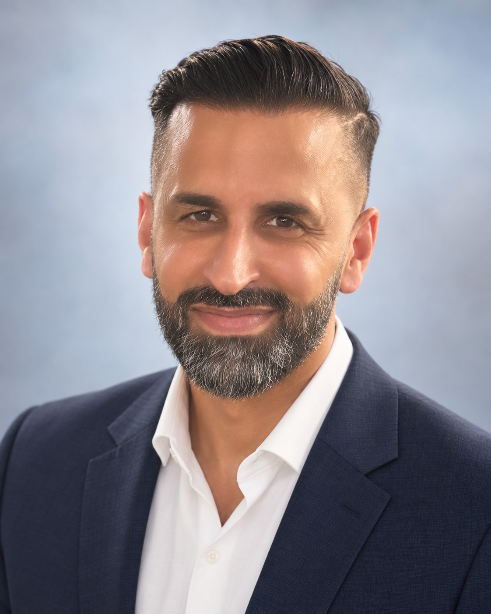
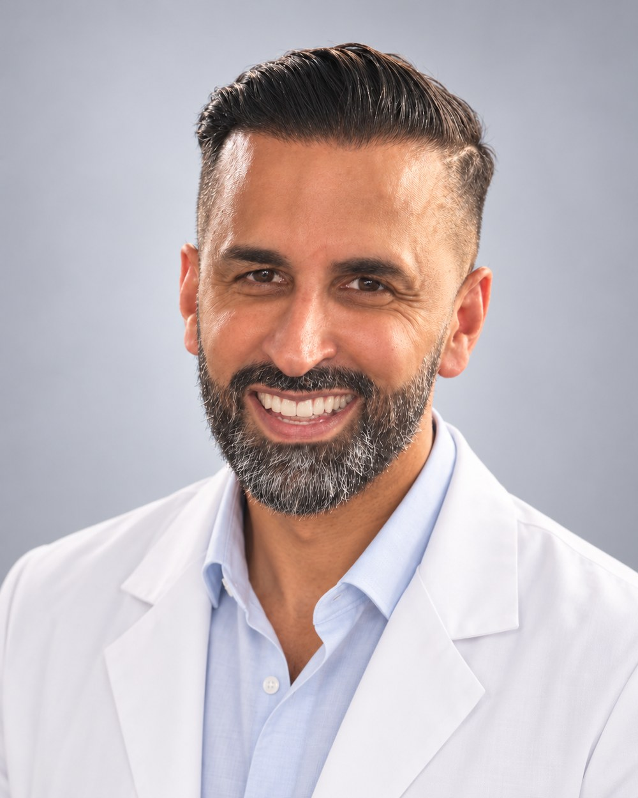

Uplekh Purewal, MD
Interventional Pain Medicine & Anesthesiology
- Board Certified — Pain Medicine, American Board of Anesthesiology
- Board Certified — Anesthesiology, American Board of Anesthesiology
- Dual Fellowship Trained — University of Pennsylvania Health System
Find the source. Choose the least invasive option that works.
Dr. Purewal founded Triumph Ortho & Spine on a straightforward premise: pain deserves a diagnosis, not a prescription pad. Every treatment plan begins with identifying the specific structure generating the pain — then selecting the least invasive intervention capable of resolving it.
That philosophy shapes how he sequences care. Diagnostic blocks confirm the pain generator before any definitive procedure is performed. Image-guided injections and radiofrequency ablation are used to interrupt pain at its source. For patients with persistent neuropathic pain who have exhausted conservative options, he evaluates neuromodulation — spinal cord and dorsal root ganglion stimulation — earlier in the pathway than has been traditional, citing long-term outcomes data that favors intervening before pain becomes entrenched.
His training spans both sides of the operating room. Residency in anesthesiology at Tufts Medical Center and a cardiothoracic anesthesiology fellowship at Penn gave him a deep grounding in physiology, airway and hemodynamic management, and procedural safety. A second Penn fellowship in pain medicine focused that foundation on the interventional spine and peripheral nerve work he practices today.

Procedures & Interventions
Image-guided, diagnosis-first interventional pain management for the spine, joints, and peripheral nerves.
Spine
- Cervical & lumbar epidural steroid injections
- Facet joint injections & medial branch blocks
- Radiofrequency ablation (facet denervation)
- Sacroiliac joint injections
- Selective spinal nerve root blocks
Neuromodulation
- Spinal cord stimulation — trial & implant
- Dorsal root ganglion (DRG) stimulation
- Percutaneous electrode placement
- Pulse generator implantation
Joint & Nerve
- Large & small joint injections
- Lumbar sympathetic blocks
- Peripheral nerve blocks
- Trigger point injections
Regenerative
- Platelet-rich plasma (PRP)
- Cell-based regenerative therapies
- Musculoskeletal ultrasound guidance
Conditions Treated
Chronic low back and neck pain · Sciatica and radiculopathy · Spinal stenosis · Degenerative disc disease · Failed back surgery syndrome · Complex regional pain syndrome · Diabetic and post-herpetic neuropathy · Facet arthropathy · Sacroiliac joint dysfunction · Work and auto injuries · Joint arthritis
Professional Memberships
American Society of Anesthesiologists · International Spine Intervention Society · American Medical Association
You. Restored.
Whatever the source of your pain or limitation — we're here to help you move forward.